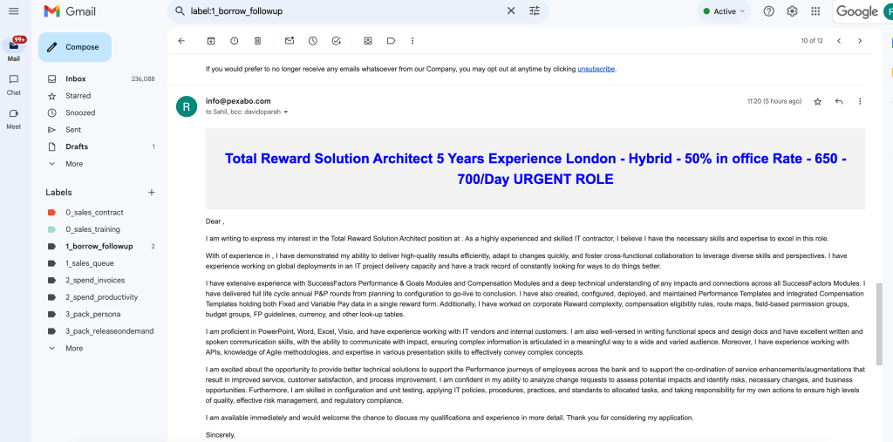
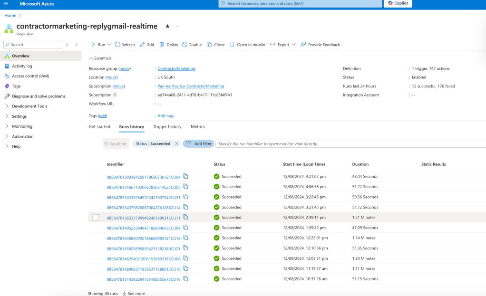

Reducing Spam with Logic Apps and LLM Validation
Automated Emails for Contractor Marketing

In today's digital age, the battle against spam is constant. Whether it's phishing attempts, unsolicited advertisements, or irrelevant user submissions, spam can disrupt user experiences and burden system resources. However, with the advent of advanced AI technologies, particularly Large Language Models (LLMs), it's now possible to create smarter systems that can efficiently filter out spam with greater accuracy.
One effective approach to combat spam is integrating LLMs into your workflows using Microsoft Azure Logic Apps. Logic Apps provide a robust framework for automating workflows and integrating various services. By incorporating LLMs, you can add a layer of intelligent validation that significantly reduces spam without needing complex custom code.
Understanding the Problem
Spam takes many forms: it can be unwanted emails, fake user registrations, or even bot-generated comments on websites. Traditional methods for filtering spam include keyword-based filters, CAPTCHA, and email blacklists. While these methods can be effective, they often struggle with the sophisticated tactics used by spammers today. Additionally, they may inadvertently block legitimate content or create friction for real users.
This is where LLMs come into play. Unlike traditional methods, LLMs can understand and generate human-like text, enabling them to better discern the intent behind a piece of content. By analyzing the context, sentiment, and overall coherence of a message, LLMs can more accurately determine whether something is spam.
How to Implement LLM Validation in Logic Apps
-
Set Up Your Logic App:
Start by creating a Logic App in the Azure portal. Logic Apps allow you to automate workflows by connecting various services, including LLMs, databases, and email services. You can trigger the workflow based on different events, such as receiving an email, a form submission, or an API call. -
Integrate with LLM:
Once your Logic App is set up, integrate it with an LLM service, such as OpenAI's API or Azure's own Cognitive Services. This can be done by adding an HTTP action that sends the content to be validated (e.g., an email body or a comment) to the LLM. The LLM will analyze the content and return a response indicating whether it is likely spam. -
Validate Content:
With the LLM's response, you can set up conditions within the Logic App to determine the next steps. For example, if the LLM flags the content as spam, the Logic App can automatically delete the content, mark it for further review, or notify an administrator. If the content is legitimate, the Logic App can proceed with normal processing. -
Feedback Loop:
To continuously improve the accuracy of the LLM, set up a feedback loop. Store flagged content and review it periodically to ensure that legitimate content isn’t being misclassified as spam. You can use this data to fine-tune the LLM or update your Logic App’s conditions. -
Monitoring and Optimization:
Regularly monitor the performance of your Logic App and the LLM integration. Track metrics such as the rate of false positives and negatives, and adjust your workflow as needed. Over time, you’ll be able to fine-tune the system to maximize spam filtering while minimizing disruption to legitimate users.
Benefits of Using LLMs for Spam Reduction
-
Higher Accuracy: LLMs offer a higher level of accuracy in content validation compared to traditional rule-based systems. They can understand nuances in language, making them more effective at detecting sophisticated spam tactics.
-
Scalability: Logic Apps combined with LLMs provide a scalable solution that can handle large volumes of data without significant performance degradation.
-
Reduced Manual Work: Automating spam detection with LLMs reduces the need for manual review, freeing up resources for more critical tasks.
-
Enhanced User Experience: By minimizing false positives, legitimate users have a smoother experience, with fewer interruptions from spam filters.
Conclusion
Integrating LLMs into your Logic Apps for spam validation is a powerful way to enhance your system's defenses against spam. This approach not only improves accuracy but also scales effortlessly with your growing needs. As LLM technology continues to advance, expect even more sophisticated and effective spam filtering solutions to become available, helping you stay ahead in the ongoing fight against spam.
By leveraging the power of LLMs and the flexibility of Logic Apps, you can build smarter, more efficient workflows that keep spam at bay, ensuring a smoother and more secure experience for your users.

Connect with me:
-
LinkedIn: https://www.linkedin.com/in/rifaterdemsahin/
-
Twitter: https://x.com/rifaterdemsahin
-
YouTube: https://www.youtube.com/@RifatErdemSahin
Imported from rifaterdemsahin.com · 2025